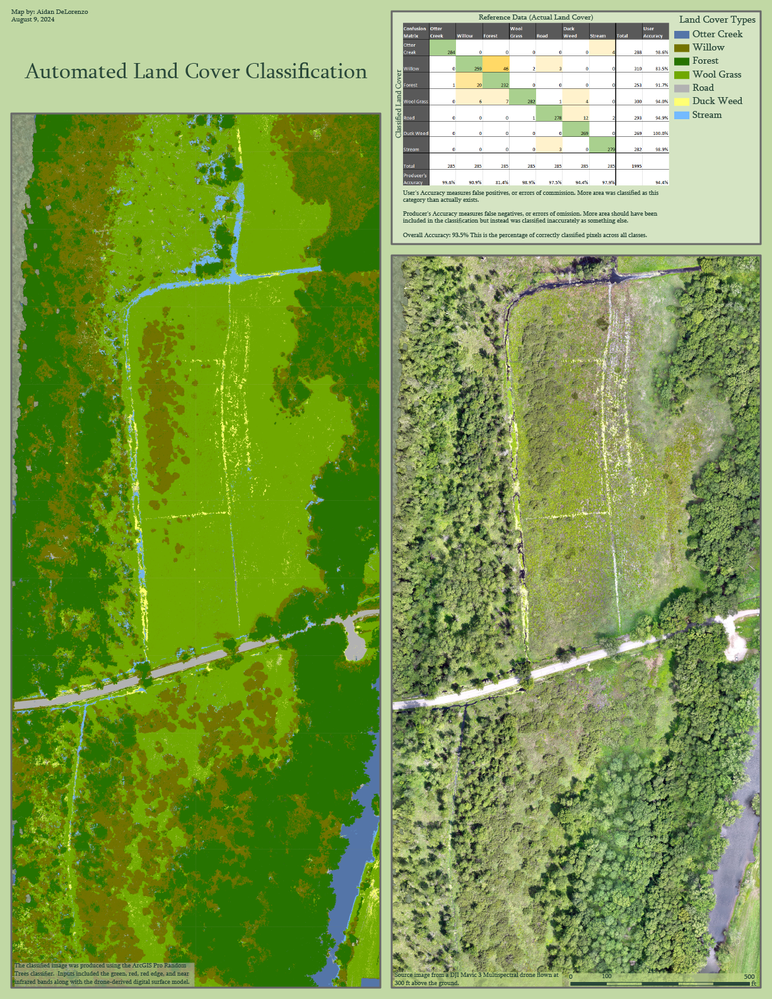

Ecological Mapping of the Cornwall Swamp
Cornwall Swamp
 The Cornwall Swamp is in central Vermont in the Otter Creek watershed and is the largest wetland complex in the state. Its predominant forest canopy is white cedar, red maple, silver maple, and green ash. The swamp is seasonally flooded, and provides crucial ecosystem services for the area by dampening the severity of flooding events. During high water, the swamp obsorbs water throughout the extensive wetland area; this water is then released slowly over the course of multiple days preventing the down stream river from peaking too high at any one point.
The Cornwall Swamp is in central Vermont in the Otter Creek watershed and is the largest wetland complex in the state. Its predominant forest canopy is white cedar, red maple, silver maple, and green ash. The swamp is seasonally flooded, and provides crucial ecosystem services for the area by dampening the severity of flooding events. During high water, the swamp obsorbs water throughout the extensive wetland area; this water is then released slowly over the course of multiple days preventing the down stream river from peaking too high at any one point.
This project was in collaboration with the Lemon Fair Insect Control District (LFICD) which is responsible for mosquito and other pest control in the towns of Bridgeport, Weybridge, and Cornwall. The Cornwall Swamp is of particular concern for the LFICD because of it's potential for mosquito breeding habitat and proximity to residential areas. The goal of this project was to map the ecological characteristics and hydrological processes of the Cornwall Swamp to identify priority mosquito abatement areas. Mosquitos can bread anywhere there is still or slow moving water, so much of this task boils down to finding these places were water collects.
Analysis
 First, to try to identify likely places where water would pool and serve as mosquito breeding territory, I used a digital elevation model to calculate topographic roughness index which uses a formula to quantify how quickly the slope changes from one place to the next. A high roughness index means that the slope is going from flat to steep very quickly, and so there are likely hummucks where water can pool.
The map to the left shows that much of the area of the swamp has a consitent speckled pattern of roughness. This was confirmed with ground checks to represent hummucks. Although the map is fairly consitent, the western portion of the swamp seem to have slightly higher roughness index values. This map was made with state lidar imagery which is at a resolution of 35cm per pixel; this is quite good for publicly available data, but mosquito breeding sites can be so small that the resolution still was not sufficient for this project.
First, to try to identify likely places where water would pool and serve as mosquito breeding territory, I used a digital elevation model to calculate topographic roughness index which uses a formula to quantify how quickly the slope changes from one place to the next. A high roughness index means that the slope is going from flat to steep very quickly, and so there are likely hummucks where water can pool.
The map to the left shows that much of the area of the swamp has a consitent speckled pattern of roughness. This was confirmed with ground checks to represent hummucks. Although the map is fairly consitent, the western portion of the swamp seem to have slightly higher roughness index values. This map was made with state lidar imagery which is at a resolution of 35cm per pixel; this is quite good for publicly available data, but mosquito breeding sites can be so small that the resolution still was not sufficient for this project.

{kind=link}
To further understand these old farm ditches, I looked at historic satellite imagery of the area and created the map bellow. In this map you can see how over the decades ditching became a wide spread practice on farm fields which persist today even after the fields have been abandonded. These provide lots of mosquito breeding habitat.

Finally, we also conducted a drone flight on the west side of the swamp on active agricultural fields. Although these have never been formally ditched, the fields still contain linear topographic features such as shallow ruts created by tractors. These ruts likely do not hold still water though, as the entire field is sloped from west to east draining into the swamp.